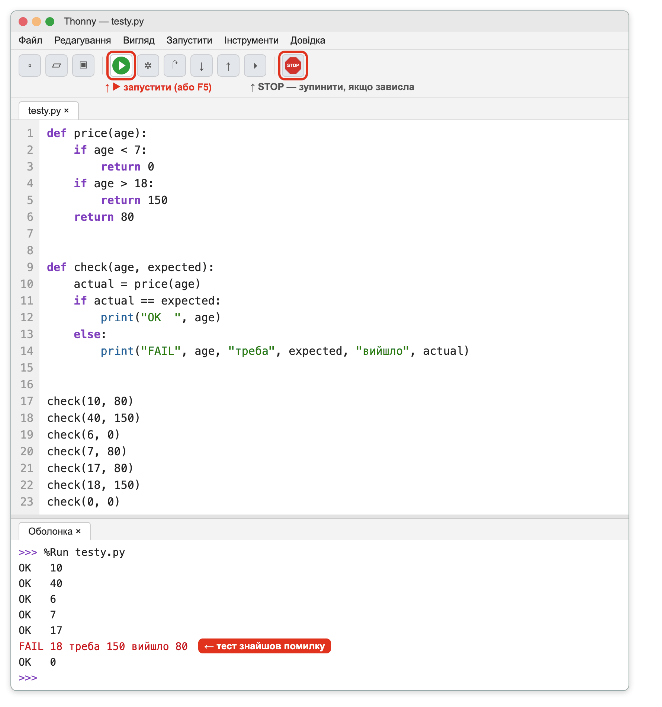

Програма запустилась — це ще не означає, що вона правильна. Сьогодні підготуємо набори тестових даних і навчимо програму перевіряти саму себе. Так працюють інженери з автоматизації тестування.
Тест = вхідні дані + очікуваний результат. Очікуваний беруть з умови, а не з того, що вивела програма. Збіглося — OK, ні — FAIL.
| Група даних | Що це | Приклад: «дітям до 7 років — безкоштовно» |
|---|---|---|
| Звичайні | те, що вводять найчастіше | 3, 10, 40 |
| Межові | сама межа і її сусід; тут помилок найбільше (> замість >=) | 6 і 7 |
| Особливі | 0, від'ємні (якщо дозволені), однакові, один елемент, порожній список | 0 |
| Неправильні | те, чого не мало б бути | −5, літери |
Умова: до 7 років — 0 грн, від 7 до 17 — 80 грн, від 18 — 150 грн.
def price(age):
if age < 7:
return 0
if age > 18:
return 150
return 80
def check(age, expected):
actual = price(age)
if actual == expected:
print("OK ", age)
else:
print("FAIL", age, "треба", expected, "вийшло", actual)
check(10, 80)
check(40, 150)
check(6, 0)
check(7, 80)
check(17, 80)
check(18, 150)
check(0, 0)
| Рядок | Що робить |
|---|---|
def price(age): | функція, яку перевіряємо: за віком повертає ціну |
def check(age, expected): | перевіряльник: отримує вхід і очікуваний результат |
actual = price(age) | фактичний результат — що функція повернула насправді |
if actual == expected: | порівнює: збіглося — OK, ні — FAIL з поясненням |
check(18, 150) | один тест: для 18 років очікуємо 150 |
Умова: рік високосний, якщо ділиться на 4. Але якщо ділиться на 100 — ні, хіба що ділиться на 400. Тому 2000 — високосний, а 1900 — ні.
Тести зручно зберігати разом: вхідні дані в одному списку, очікувані результати — в другому.
def is_leap(year):
return year % 4 == 0
years = [2024, 2023, 2000, 1900]
expected = [True, False, True, False]
passed = 0
for i in range(len(years)):
if is_leap(years[i]) == expected[i]:
passed = passed + 1
else:
print("FAIL", years[i])
print("Пройдено:", passed, "з", len(years))| Рядок | Що робить |
|---|---|
years | вхідні дані: роки |
expected | очікувані результати, у тому самому порядку |
is_leap(years[i]) == expected[i] | порівнює i-й результат з i-м очікуваним |
passed = passed + 1 | рахує пройдені тести |
Умова: функція отримує список температур і повертає найбільшу.
def warmest(temps):
best = 0
for t in temps:
if t > best:
best = t
return best
def check(temps, expected):
actual = warmest(temps)
if actual == expected:
print("OK ", temps)
else:
print("FAIL", temps, "треба", expected, "вийшло", actual)
check([3, 9, 5], 9)
check([7], 7)
check([4, 4], 4)
check([-5, -2, -8], -2)| Рядок | Що робить |
|---|---|
best = 0 | найбільше, знайдене досі; тут схована помилка |
for t in temps: | перебирає всі температури |
if t > best: | знайшли теплішу — запам'ятали |
check([-5, -2, -8], -2) | тест, де всі дні морозні: найтепліше −2 |
Сам: зроби, щоб для порожнього списку функція повертала 0 і програма не падала. Підказка: if len(temps) == 0: першим рядком функції.
Одну програму написали 7 разів, і щоразу з іншою помилкою. Коду ти не бачиш — лише умову. Підбери тести так, щоб зловити всі 7. У тебе 8 спроб; можна зловити й за 6.
Умова. Доставка: сума від 1 до 499 грн — доставка 80 грн; від 500 до 999 — 40 грн; від 1000 — 0 грн. Якщо сума 0 або від'ємна — це помилка, програма повертає −1.
| Тест | Вхід | Очікую | Нових помилок зловлено |
|---|
Скласти 4 тести (вхід і очікуваний результат) до програми, яка за номером місяця називає пору року. Візьми дані з різних груп: звичайні, межові, неправильні.